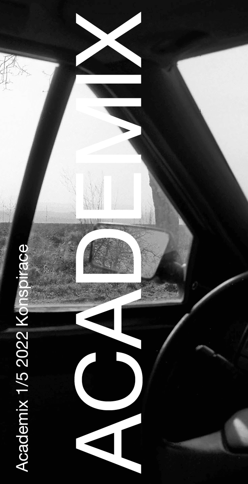
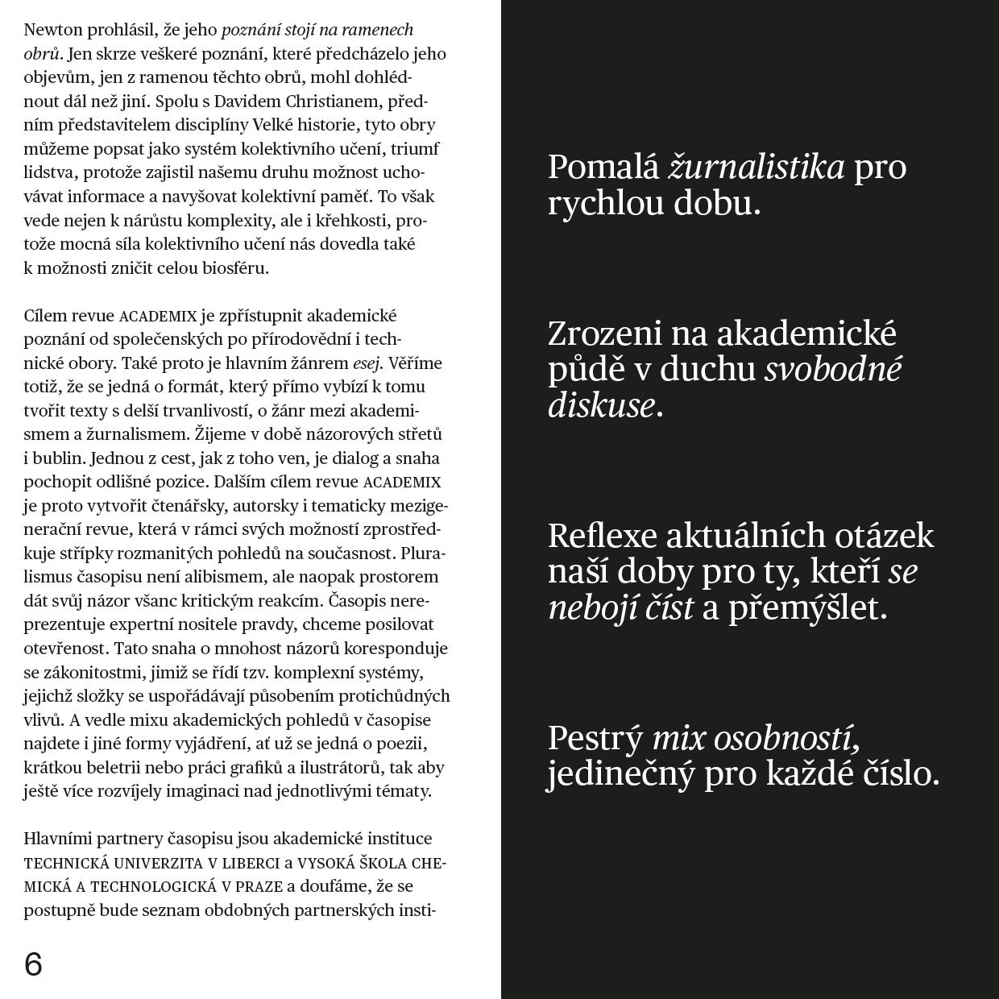
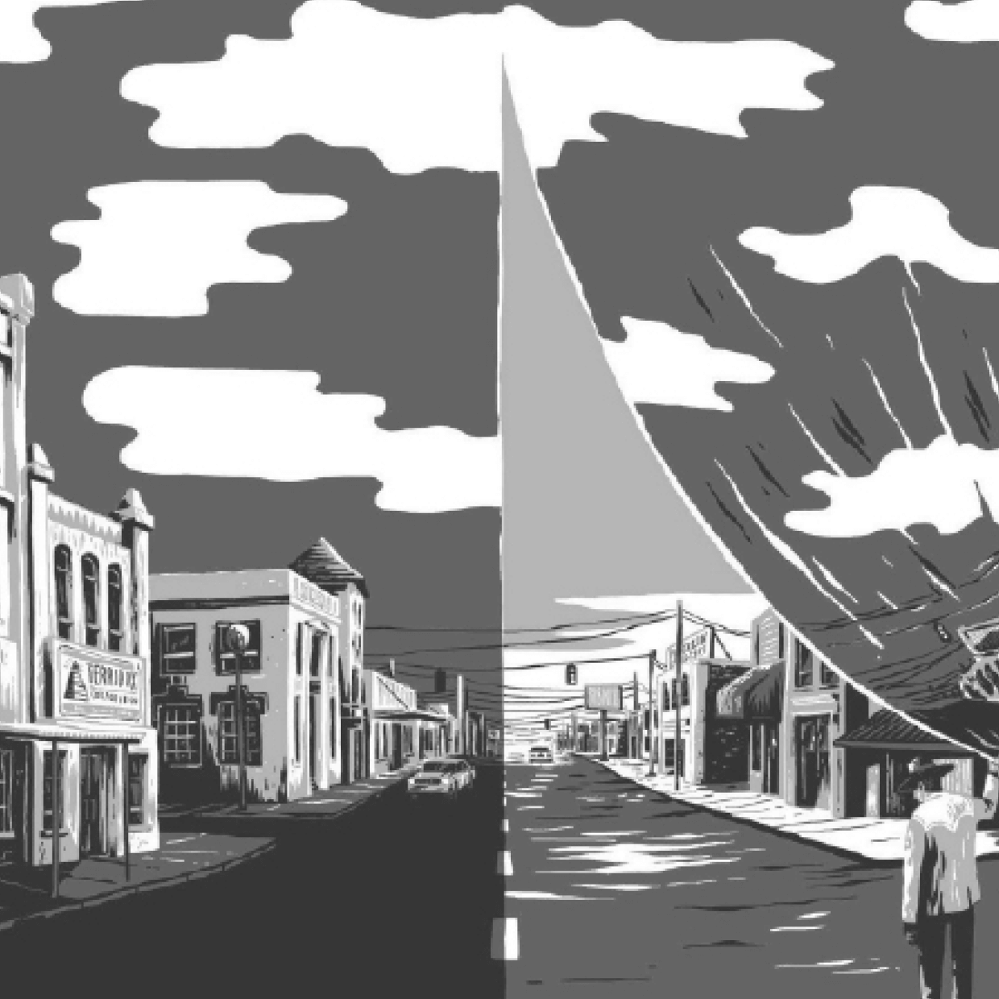

Academix Konspirace
Co můžeme mít společného alternativní spiritualita a wellness kultura s konspiračními teoriemi? Marie Heřmanová v textu představuje hnutí konspirituality a cesty, jak se dokáže konspirační narativ dostat z obskurních a nepopulárních míst internetu mezi masové publikum. Zamyšlení nad tím, proč jsou podobné komunity útočištěm pro čím dál více lidí.




Jazykové korektury:
Barbora Machková
Grafická úprava a sazba:
Studio Dipozitiv
ft. Martina Kupsová
Číslo ilustrovali: Jindřích Janíček, Martina Kupsová,
Dipozitiv, Petra Makovcová
Kontakt:redakce@academixrevue.com
+420 775 112 135
Komenského 314, 46001, Liberec
IČ: 6249167
DIČ: CZ8704015980